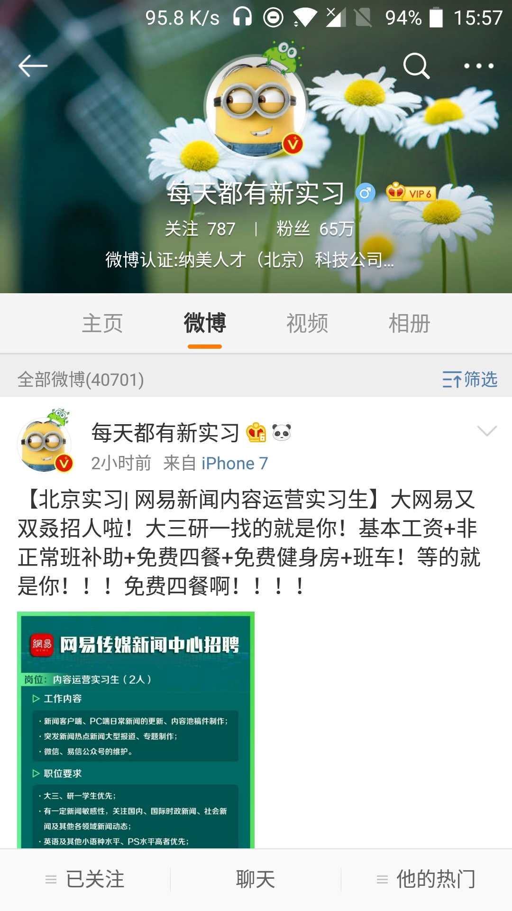
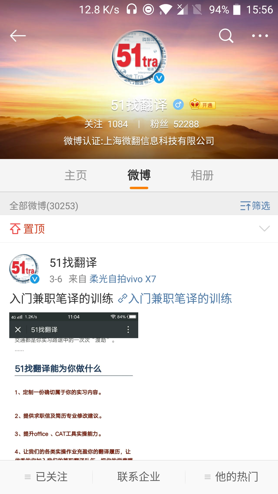
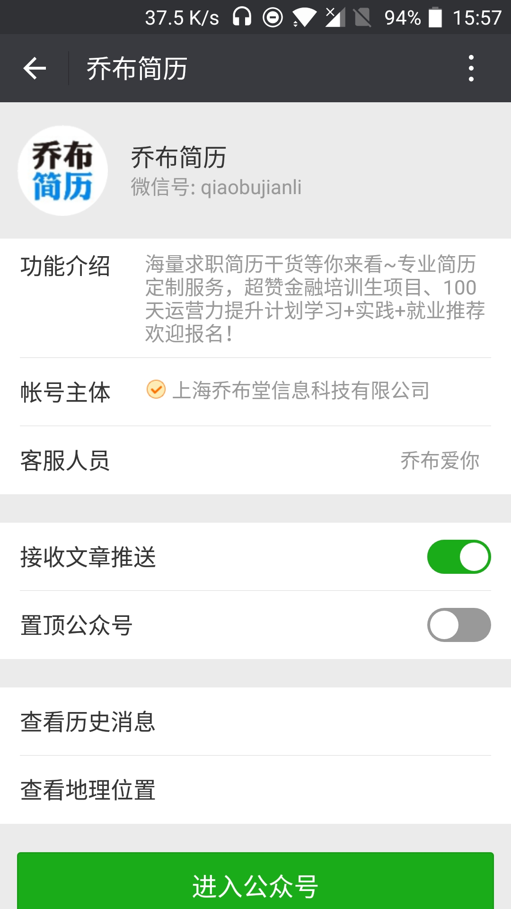
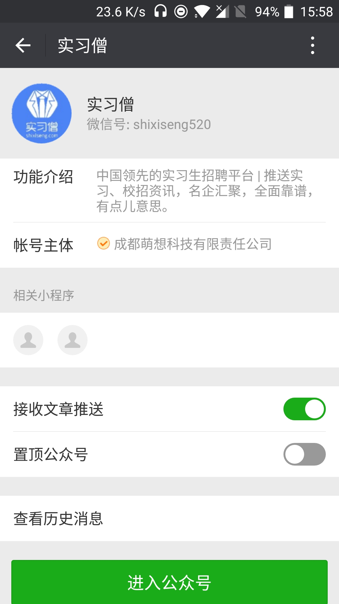
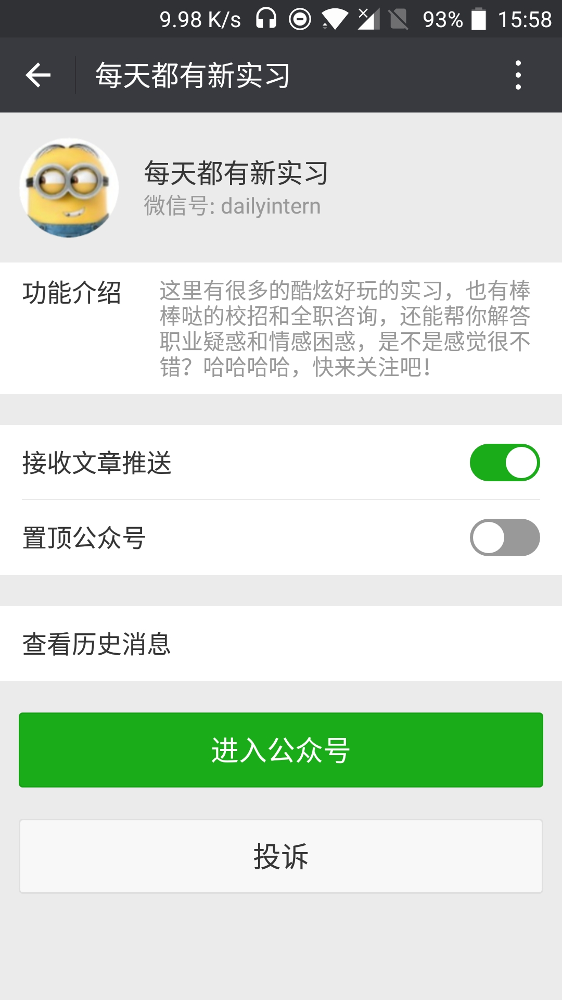
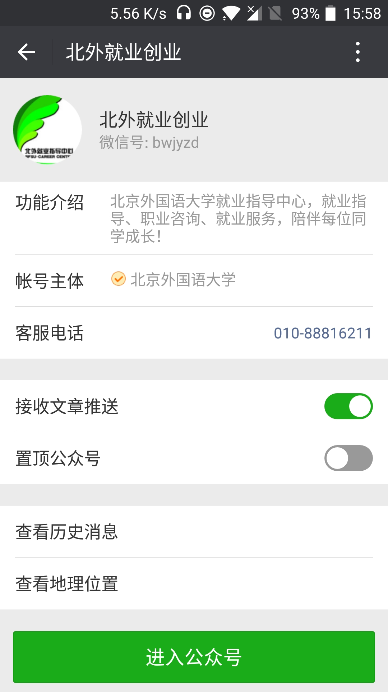

These are some of the Wechat and Weibo accounts on jobs and internships I follow and regularly check. Might not be so many, but each one is really helpful and hardly ever posts advertisement.






Follow them if you feel like it.